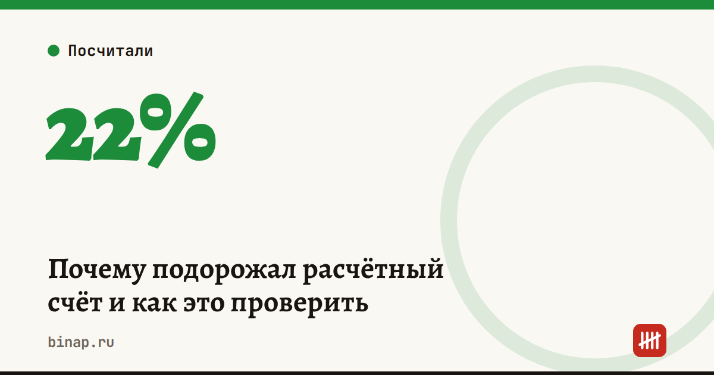

Почему подорожал расчётный счёт и как это проверить

Если с начала 2026 года обслуживание счёта стало дороже, дело не только в самом банке: отменена льгота по НДС на эквайринг и обслуживание карт, а основная ставка НДС выросла с 20% до 22%. Чтобы понять, сколько вы реально платите, разложите все списания банка за месяц по строкам.
Коротко
- С 1 января 2026 года услуги эквайринга, процессинга и обслуживания карт облагаются НДС (закон № 425-ФЗ), ставка — 22%.
- Банки часто выставляют комиссии пакетом, поэтому кажется, что подорожал «весь счёт».
- Главные статьи расходов у ИП — эквайринг, переводы себе на карту и снятие наличных, а не абонентская плата.
- Сравнивайте банки по итогу за месяц на своих оборотах.
Сроки, изменения и разборы для ИП и самозанятых — каждое утро в Telegram и MAX. Подпишитесь, чтобы не пропустить.
Что произошло
С 1 января 2026 года отменена льгота по НДС на эквайринг и обслуживание карт, а основная ставка НДС выросла с 20% до 22%. Дорожают услуги вокруг счёта — эквайринг, процессинг, карты. Банки часто выставляют комиссии пакетом, поэтому клиент видит просто «дорогой РКО».
Как проверить, за что вы платите
- Выгрузите выписку за прошлый месяц и отфильтруйте все списания банка.
- Разложите их по строкам: абонентская плата, платёжки, переводы себе на карту, снятие наличных, эквайринг, карты, СМС и сервисы.
- Посчитайте долю каждой строки в итоге — обычно 1–2 строки дают большую часть расходов.
| Статья | Что проверить |
|---|---|
| Эквайринг | реальная ставка: все платежи за приём карт ÷ оборот по картам |
| Переводы себе на карту | лимит бесплатных переводов и цена сверх него |
| Снятие наличных | процент и минимальная комиссия |
| Абонентская плата | что в неё входит, а что оплачивается отдельно |
| СМС и сервисы | можно ли отключить ненужное |
Расчёт редакции: при выручке по картам 1 млн ₽ в месяц разница в ставке эквайринга 0,3 п. п. — это 3 000 ₽ в месяц или 36 000 ₽ в год. Как посчитать свою реальную ставку, — в статье эквайринг для ИП: как сравнить тарифы.
Что сделать
- Разложите расходы на банк за месяц по таблице выше.
- Прогоните свои обороты через тарифы 3–4 банков и сравните итог за месяц с эквайрингом. Как это сделать, — в статье где открыть счёт ИП.
- Отключите платные услуги, которыми не пользуетесь.
- Если вы плательщик НДС по ставке 22%, НДС с комиссий банка можно принять к вычету по счёту-фактуре банка.
Частые вопросы
Почему банк поднял цены, если тариф не менялся? Часть услуг — эквайринг и обслуживание карт — с 2026 года облагается НДС, и банки перекладывают его в цену.
Выгодно ли сменить банк? Только если итог за месяц на ваших оборотах заметно ниже. Учитывайте и стоимость перехода: перенастройку эквайринга, новые реквизиты для клиентов.
Нужен ли второй счёт? Да, как запасной на случай блокировки по 115-ФЗ — подробнее в статье банк заблокировал счёт.